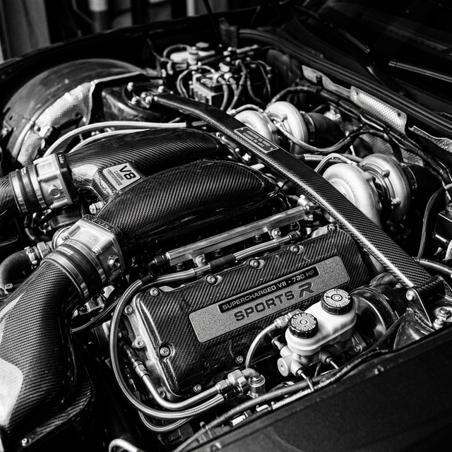
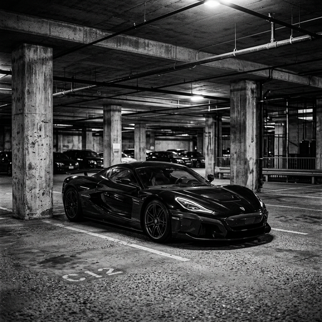

Otomotiv dünyasında "tutku" kelimesinin sözlük karşılığı tartışmasız İtalyan mühendisliğinin şahlanan atıdır. Her bir kavisin, her bir hava kanalının aerodinamik bir amacı olduğu bu araçlar, salt hızı değil, sürüşün sanatsal boyutunu temsil eder. Rüzgarla dans etmek için şekillendirilen karbon fiber gövdeleri, statik haldeyken bile saatte 300 kilometre hızla gidiyormuş hissi uyandırır.
Arkanızda konumlandırılan o devasa V8 veya V12 motorun sağır edici ve bir o kadar da melodik senfonisi, gaza her dokunuşunuzda ensenizdeki tüyleri diken diken eder. Kırmızı renk (Rosso Corsa), burada sadece bir boya kodu değil, yetmiş yılı aşan motor sporları tarihinin yollara inmiş yansıması, bir dinin simgesidir.

Sesten Hıza İtalyan Karakteri
Gelişmiş rüzgar tüneli testleri, aktif aerodinamik paneller ve doğrudan Formula 1 pistlerinden aktarılan hibrit teknolojiler, günümüz süper spor otomobillerinin performans sınırlarını fizik kurallarını zorlayacak boyutlara taşıdı. Ancak tüm bu silikon ve elektrik yığınının altında, direksiyon başındaki o saf, vahşi, mekanik his ustalıkla korunmaya devam ediyor.
Kokpite geçtiğiniz an, her kontrolün sürücünün gözünü yoldan ayırmaması adına direksiyon üzerine konumlandırıldığını fark edersiniz. Minimalist ama lüks olan iç mekanda kullanılan premium deri ve çıplak karbon birleşiminin kokusu bile benzersizdir. Bu kokpit, sizi sadece bir yolcu değil, adeta bir pilot gibi hissettirmek üzere tasarlanmıştır.

Günün sonunda bir Ferrari sahibi olmak sadece garajınıza pahalı bir metal yığını çekmek değildir. Dünyanın en saygın otomobil kulüplerinden birine, efsanevi Enzo Ferrari'nin mirasına doğrudan ortak olmak demektir. Maranello'nun kapılarından çıkan her otomobil, ruhu olan mekanik bir kalbe sahiptir.
"Otomobilde ruh arıyorsanız, İtalya'dan gelen o tiz V8 çığlığına kulak verin."
Kusursuz ağırlık dağılımı, ısındıkça yolu adeta tırmalayan karbon seramik frenler ve milisaniyeler içinde vites küçülten şanzımanı sayesinde bu efsanevi otomobiller pist günlerinin tartışmasız kralı olmaya, sokakların da en saygıdeğer ikonları olarak kalmaya devam edecek.